Self-Link: https://cal-cs184-student.github.io/sp22-project-webpages-ssanghavi404/proj2/index.html
Github Repo: https://github.com/cal-cs184-student/p2-meshedit-sp22-sr_proj2
Overview
In this project, we implemented key functionalities in a 3D polygon mesh editor. Our editor can interpolate
Bezier curves (1D) and Bezier surfaces (2D) with the de Casteljau subdivision algorithm, which is used for
creating smooth curves and surfaces given a set of control points. The editor makes use of the HalfEdge data
structure and the associated Vertex, Edge, and Face classes in the internal representation of the mesh object.
Using area-weighted vertex normals, we implemented Phong Shading. We also added the capability for the mesh editor
to perform simple local mesh operations like edge flips and edge splits. We used both these mesh operations when
implementing loop subdivision for mesh upsampling, which allows us to get more fine-grained meshes from a course
mesh.
The most interesting thing we learned from this assignment was a sense of fluency with the HalfEdge data structure
and pointer-chasing in order to perform the mesh operations and modify the mesh as desired. Also, we got good
practice turning the course theory into running code.
Section I: Bezier Curves and Surfaces
Part 1: Bezier curves with 1D de Casteljau subdivision
Casteljau's algorithm is is used to construct degree (n - 1) Bezier curves by recursively using linear
interpolation on pairwise points p_i and p_{i+1}.
This algorithm terminates when the number of points left is 1. At each iteration the number of points decreases by
1, meaning the Casteljau method will have (n - 1) iterations where n is the number of control points.
The Bezier curve generated by Casteljau's algortihm is parameterized by a variable t, which ranges from 0 to 1.
For our implementation of de Casteljau subdivision we implemented a function to evaluate a single step. In one
step,
we go over each of the (n-1) pairs of neighboring points p_i, p_{i+1), and a new point
p_i_prime = (1 - t) * p_i + t * p_i+1
To get the final point value of a point for a given value of t, we repeat this "step" until we have only one point
remaining.
By varying our parameter t from 0 to 1, we generate all the points on our Bezier curve.
|
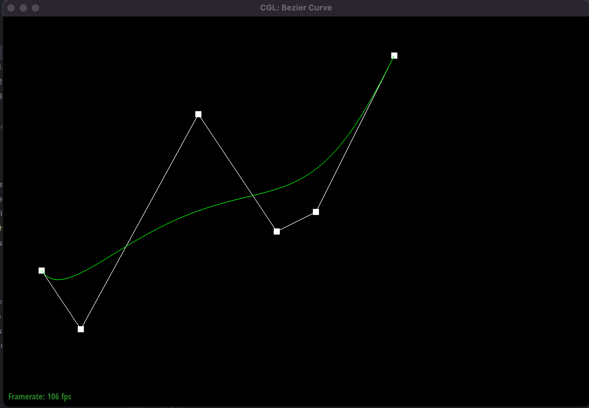
Original Bezier curve with 6 control points. The green line represents the evaluated bazier curve.
|
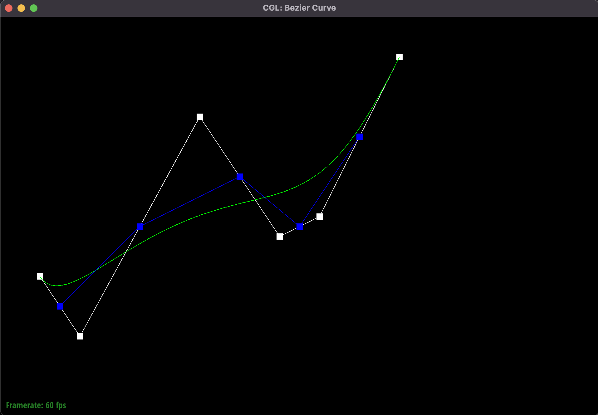
First iteration of de Casteljau's algorithm.
|
|
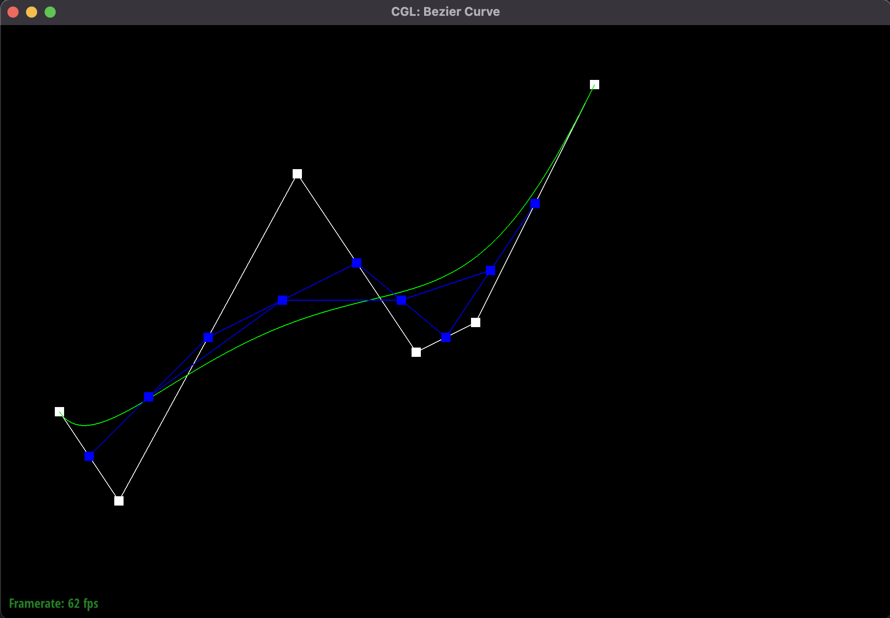
Iteration 2
|
Iteration 3
|
|
Iteration 4
|
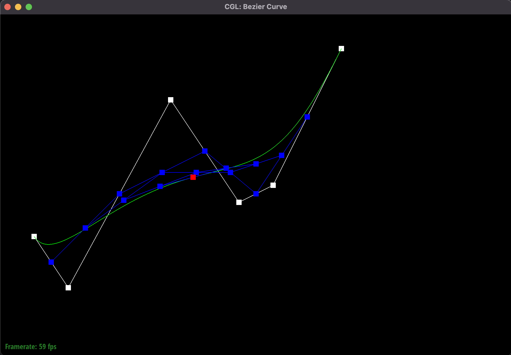
Iteration 5
|
|
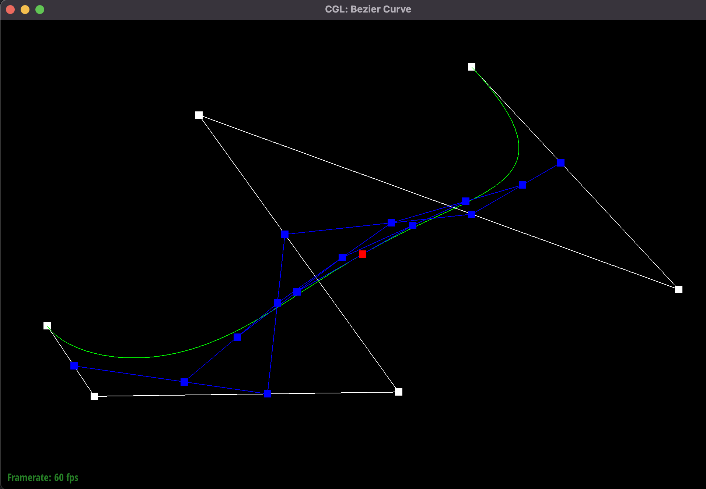
Bazier curve with new configuration
|
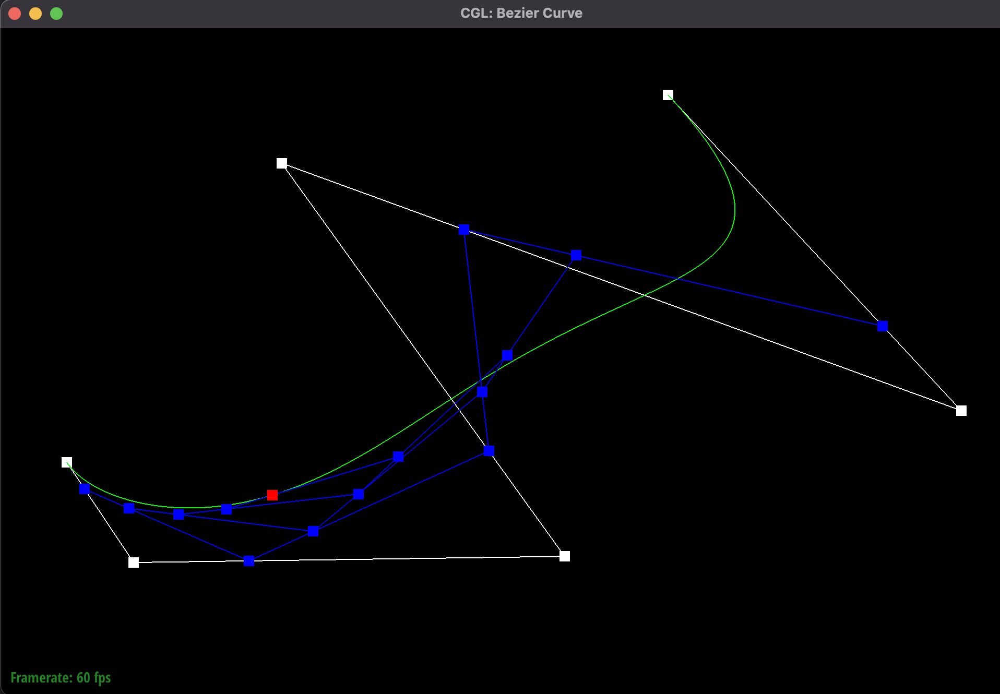
Motifying parameter "t"
|
Part 2: Bezier surfaces with separable 1D de Casteljau subdivision
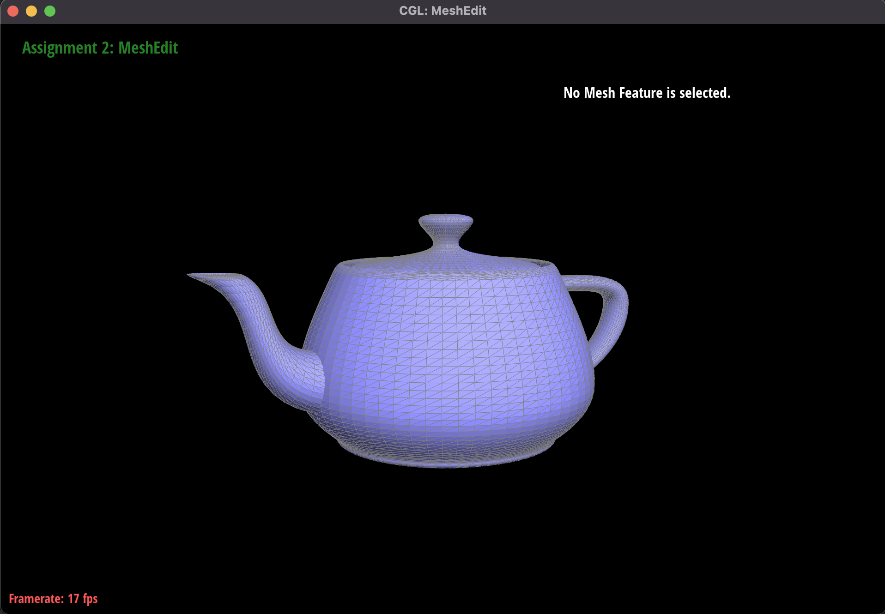
Rendering of teapot.bez
In Part 2, we implement an algorithm to evaluate Bezier surfaces using 3D control points.
The overarching idea to extending the de Casteljau algorithm to 2D surfaces is to have two evaluation phases, one
along each dimension.
Starting with
n x n control points, we first want to calculate a new set of n row_control points. We
define a row control point as the evaluated de Casteljau's subdivision on each row
of control points using parameter t = u. We then perform de Casteljau's algorithm on
this set of row control points using parameter t = v, thus performing the repeated interpolation in the other
dimesion to get a final point corresponding to a (u, v) pair. By varying both u and v from 0 to 1, we get a full
Bezier surface of points that are smoothly interpolated.
Our implementation involved using a helper function to evaluate 1D. Then, in the 2D case, we applied this helper
function to each row to get a point for each row, then applied the helper function to the set of points for each
row to get one final point.
Section II: Triangle Meshes and Half-Edge Data Structure
Part 3: Area-weighted Vertex Normals
 Rendering of teapot.dae with flat shading
Rendering of teapot.dae with flat shading
|
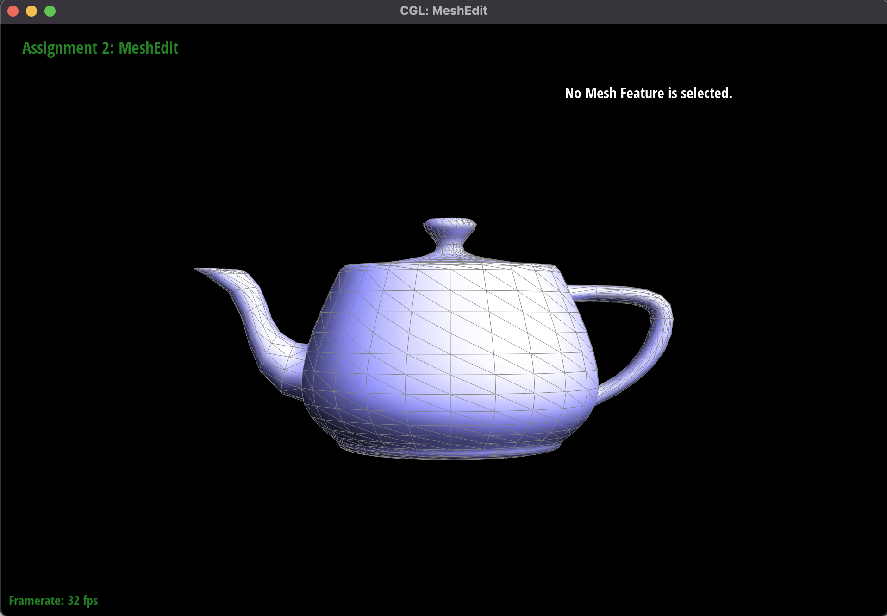
Rendering of teapot.dae with Phong shading
|
|
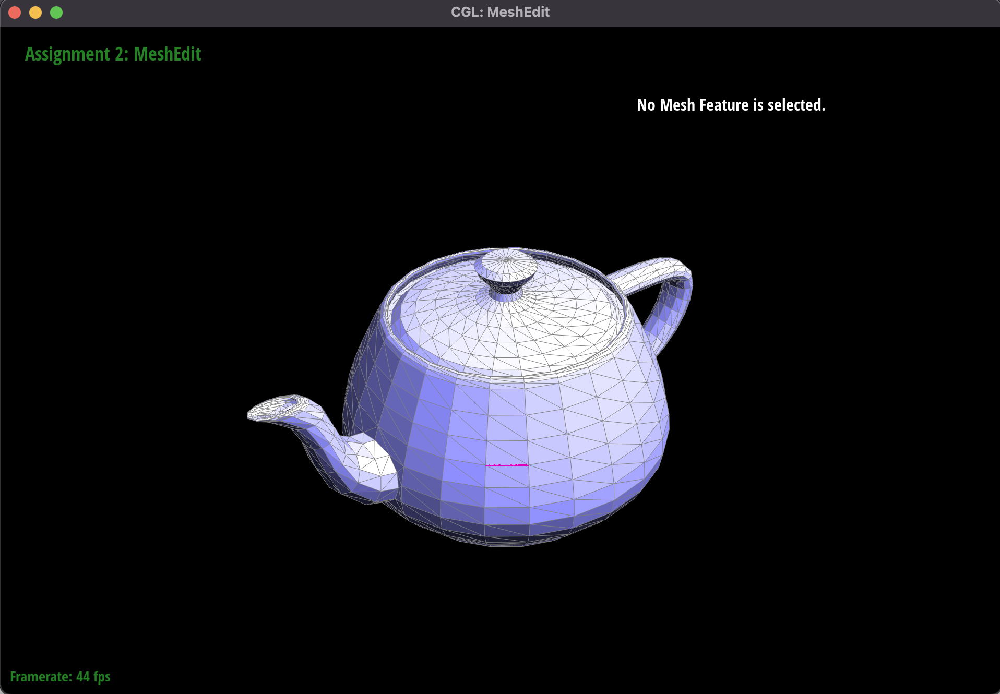
Rendering of teapot.dae with flat shading (angle 2)
|
 Rendering of teapot.dae with Phong shading (angle 2)
Rendering of teapot.dae with Phong shading (angle 2)
|
Phong Shading is an approach to make objects seem smoother and uses vertex normals to determine how bright a surface
should appear. In order to identify a normal vector for a vertex, we use the approach of finding the normal vectors
to each of the adjacent triangles in the mesh, then weighting each vector by the area of the triangle.
While this approach may seem difficult at first, we can recognize the cross-product of two vectors gives a vector
perpendicular to the plane formed by the two vectors, whose magnitude is twice the area of the triangle created by
the two vectors. So calulating both the surface normal and the weight can be done by simply taking the cross-product
of two vectors in the triangle. Each of these vectors can be constructed by taking the difference of the positions
of two different vertices in the triangle. Using the sum of the vectors formed by cross-products and normalizing at
the end would give us a unit vector that is an area-weighted average of the adjacent faces.
Part 4: Half-edge flip
Our implementation of the edge flip operation mainly involved a lot of pointer chasing and reassignment.
Specifically, we needed to reassign each Vertex in the vicinity of the flip to a different HalfEdge, we needed to
reassign the faces to different HalfEdges, and we needed to reassign the neighbors of each halfedge based on how
they changed as a result of the edge flip.
While we initially tried to write the code in such a way as to minimize the number of intermediate variables to
declare, we quickly realized that this approach was impractical from a readability perspective and would make the
code unbearable to debug. So we decided to declare each and every one of the HalfEdges, Vertices, Edges, and Faces
involved in an edge flip and identify how each of them change as a result of the edge flip. We then modify each
object according to its new position, keeping all the pointers separate before and after so that we don't have to
chase down a pointer that is potentially changing. We found drawing out a diagram of the setup before and after the
edge flip and labelling all the objects to be particularly helpful.
|
Original mesh from teapot.dae
|
|
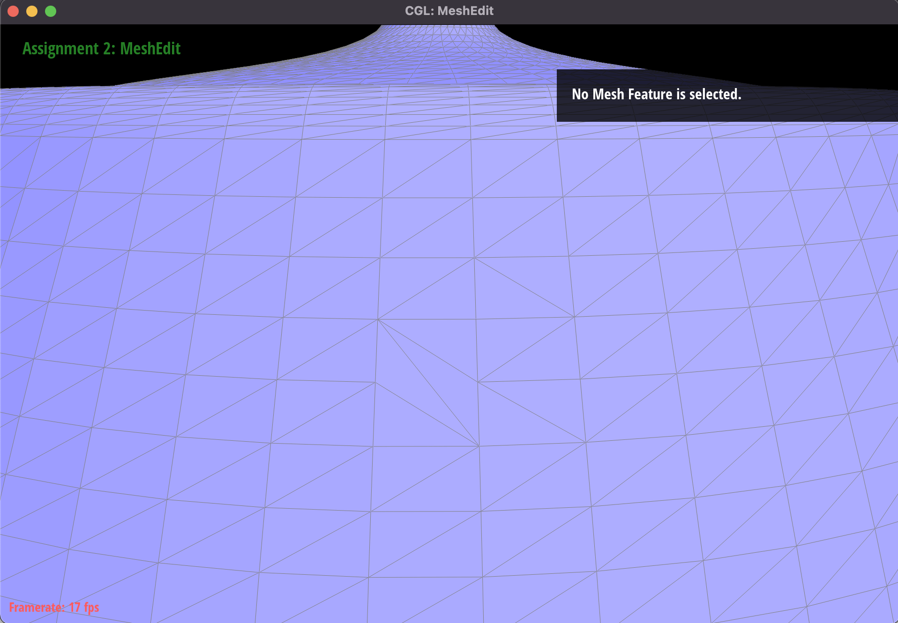
A few edge flips
|
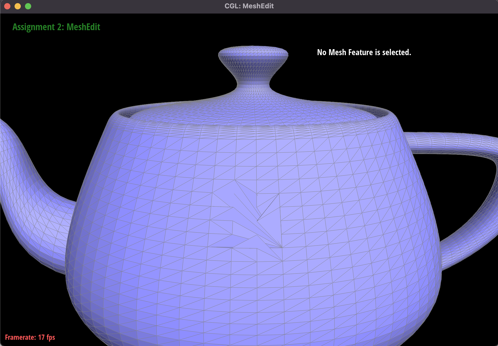
Sequence of many edge flips.
|
|
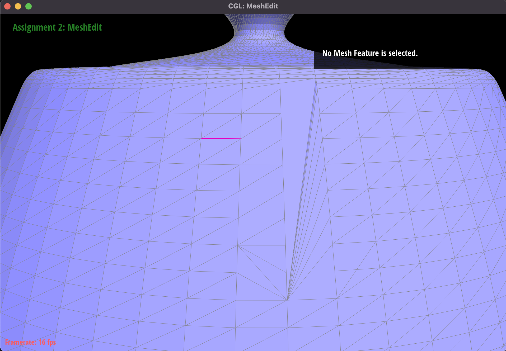
A cool pattern created by edge flips.
|
Thankfully, after deciding on the verbose approach of declaring everything and being super pedantic about seeing how
it changes, the code was relatively easy to debug. We did have a couple bugs the first time, but we just had to go
through and understand each line of the code and it was easy to spot the assignment that was out of place due to a
consistent naming convention and a having clear picture of what we were trying to do before we started coding.
Part 5: Edge split
Our approach to implementation of the edge split operation was similar to the previous part—we had to be careful
with naming all our variables and chasing down pointers. Specifically, after labelling all our existing data
structures, we had to add a new Vertex at the midpoint of the edge we wanted to split and add new Edges from the new
Vertex to the surrounding vertices. Then, we had to reassign the neighbors of each of the halfedges, and reassign
the half-edges associated with each face, edge, and vertex.
Again, a drawing of the setup before and after, with
particular attention drawn to the newly introduced half-edges, proved to be a useful reference as we wrote the code
to reassign all the pointers that changed.
|
Original mesh from teapot.dae
|
|
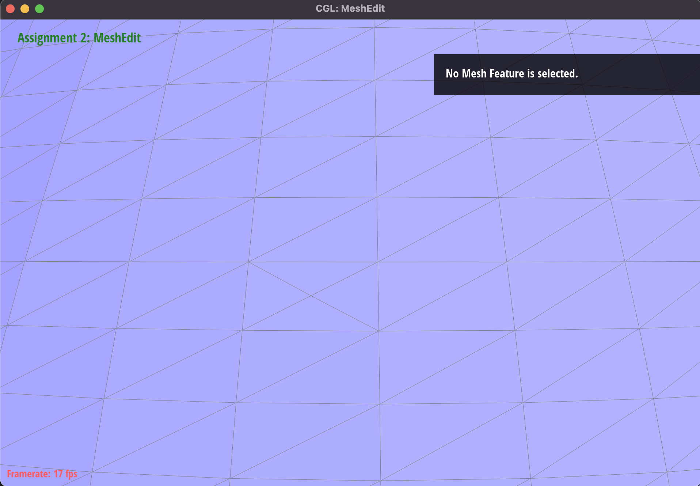
One edge split
|
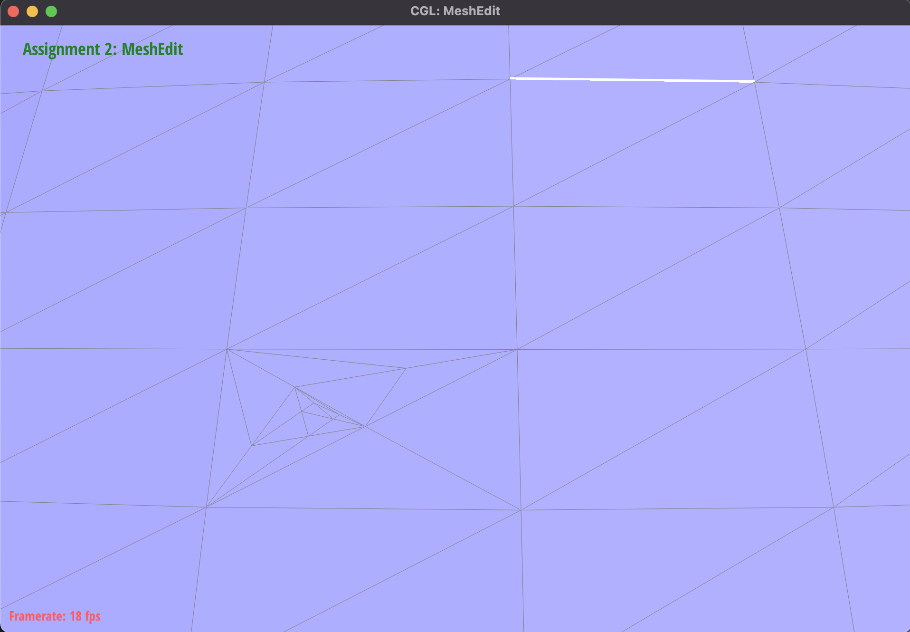
Sequence of many edge splits.
|
|
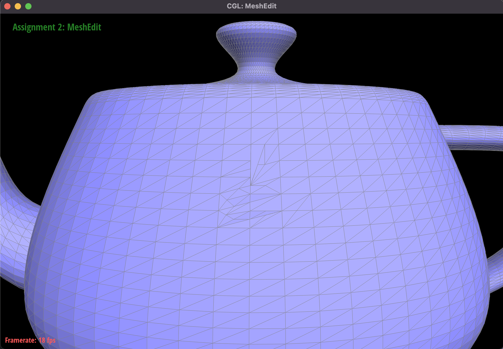
Combining edge splits and flips.
|
Debugging this part was also fairly straightforward once we followed the strategy of naming everything and being
super careful, as in the previous part. One bug we had that did not show up until the next subpart was not
marking edges and vertices as new when they were created. We also realized that not all new edges should be
marked as new. Specifically, the existing edge split into two should both be marked as old.
Part 6: Loop subdivision for mesh upsampling
This was probably the most challenging part of the project, and involved using our operations of edge flips and edge
splits from the previous parts to upsample a mesh using loop subdivision. The new mesh would be more fine-grain and
smoother than the original mesh.
Our approach to this problem was to first calculate the new coordinates of vertices (both the existing and newly
added ones), using the subdivision surface rules described in lecture and provided in the project spec. We then
performed an edge split on every existing edge in the mesh. We took advantage of the isNew() boolean
from task 5 for edges and vertices. We used this information to determine which edges to flip. The criteria was
to flip every new edge with one new and one old vertex.
We noticed that the algorithm we use to implementing upsampling has certain effects on the output.
For example, corners of the mesh's tend to look slightly weird. As a result, the new renderings
look less cubic/spherical. A part of the reason for this is due to the initial shape of the mesh,
but also due to the averaging and upsampling algorithm. Since the algorithm recalculates a point's
location based on it's neighbors, this can cause unexpected outcomes such as smoothening the corners
of an object. Additionally, the orginal mesh shape was split into two triangles for the faces of each cube. This distribution could have potentially
led to the skewed shape we noticed.
To try and fix this, we wanted to preprocess the cube and split each face into four equal triangles. We
accomplished this by splitting along the diagonal edge of each face. As a result, our loop sub-division
algorithm should perform upscaling more symmetrically. Unfortunately, this did not help with the problem
of upsampling rounding the edges and corners of the cube.
|
Upsampling demonstration using the orignal cube and subdivision once per row.
|
Upsampling demonstration using the orignal modified cude with an
X on each face created by preprocessed the mesh with additional
splits and subdivision once per row.
|
|
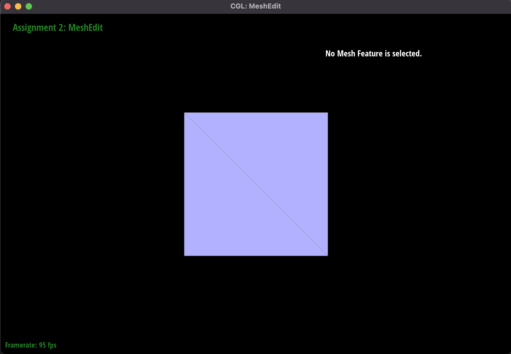
Iteration 1
|
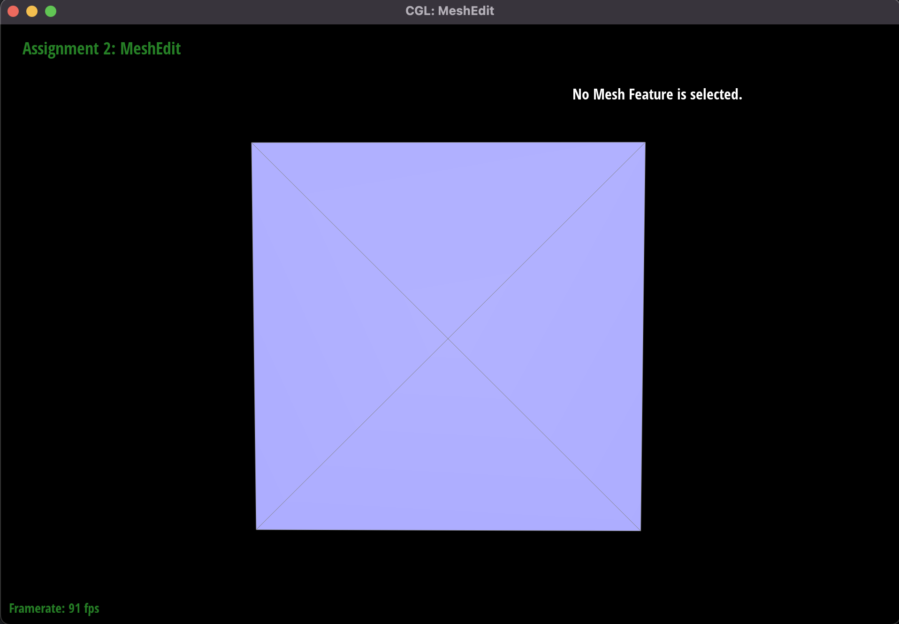
Iteration 1
|
|
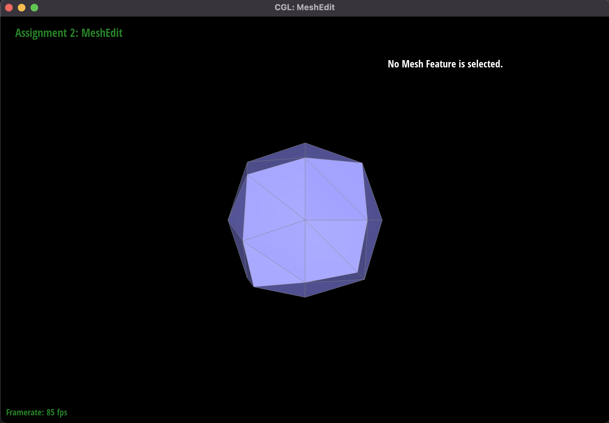
Iteration 2
|
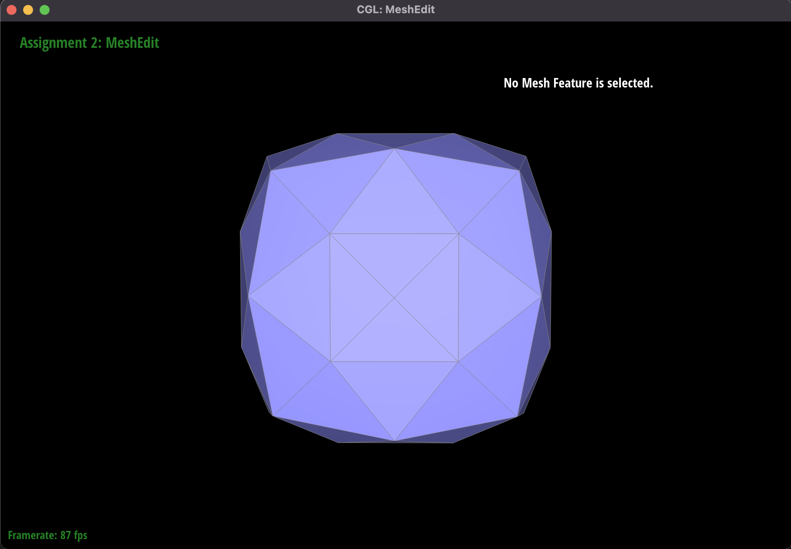
Iteration 2
|
|
Iteration 3
|
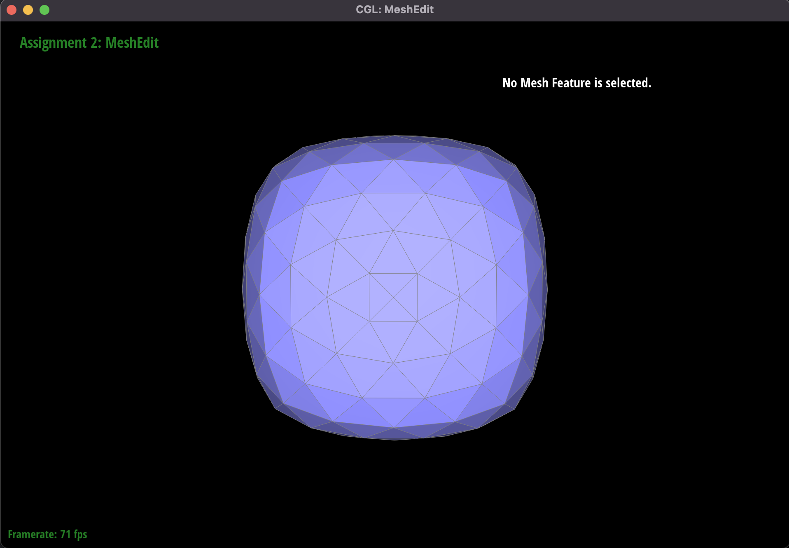
Iteration 3
|
|
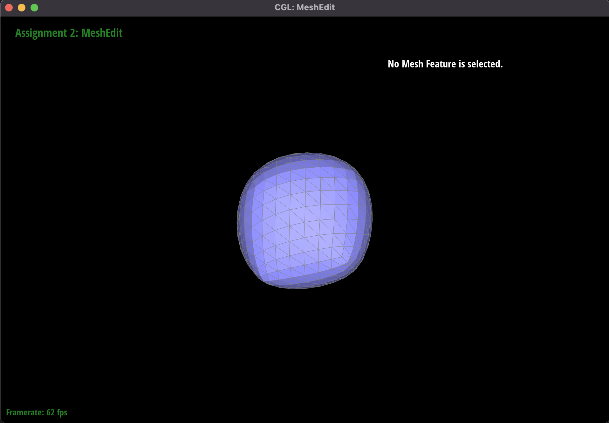
Iteration 4
|
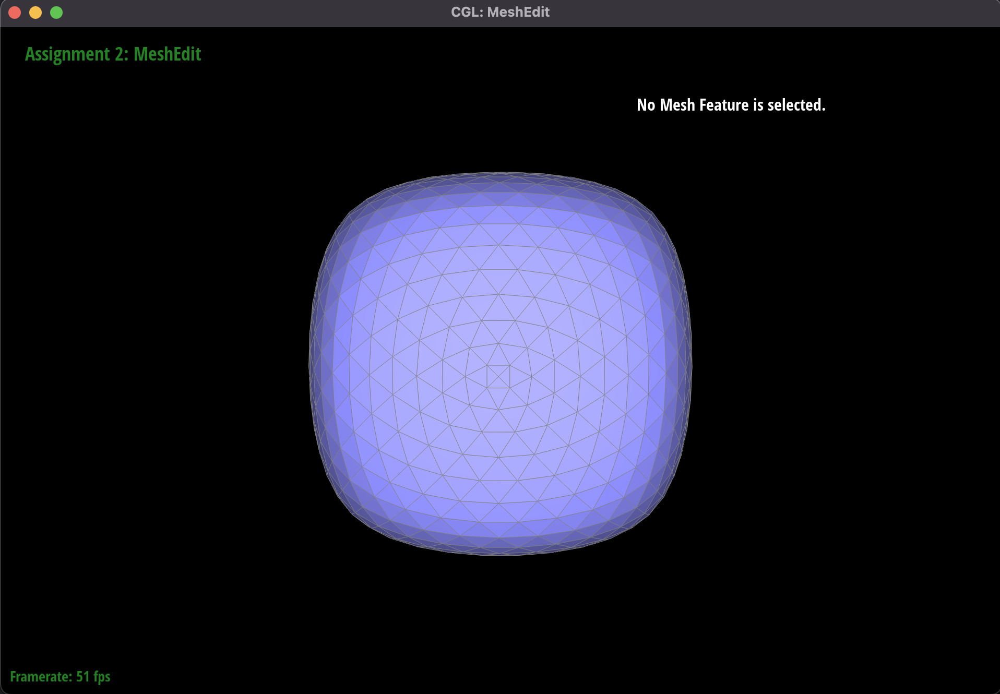
Iteration 4
|
|
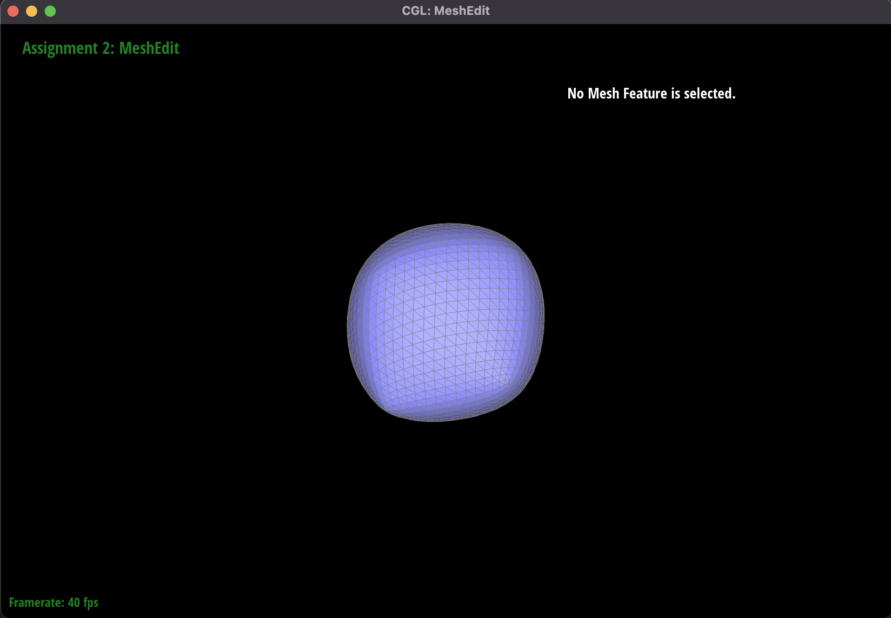
Iteration 5
|
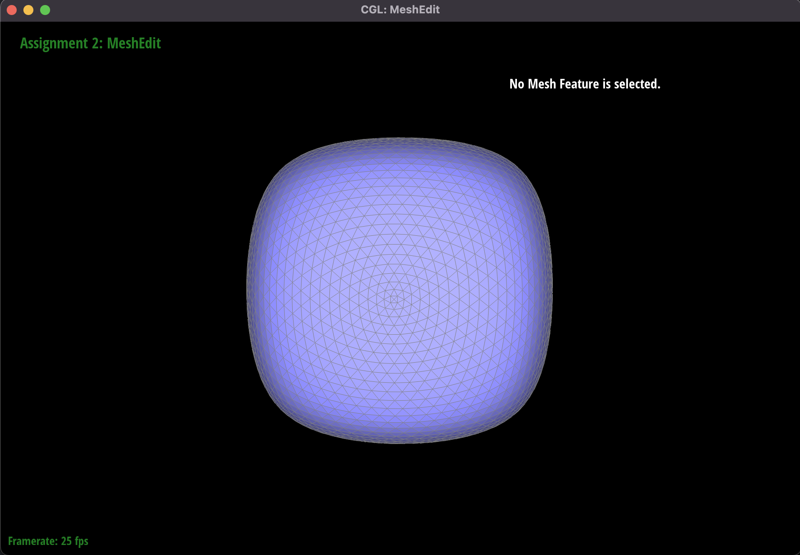
Iteration 5
|